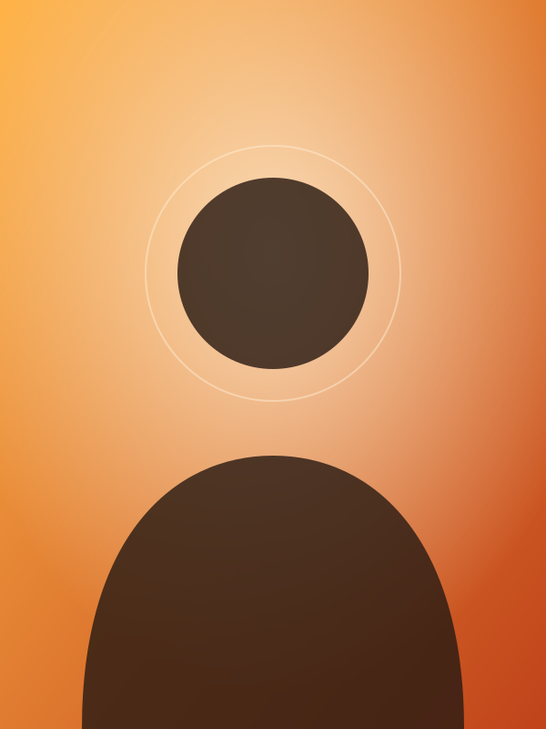

Kod yazan, merak eden biri.
Ben Ad Soyad. Aşağıda kısa özgeçmişimi, ders programımı, ilgi alanlarımı ve yeteneklerimi bulabilirsin.

Ben kimim?
Merhaba! Ben Ad Soyad, bilgisayar mühendisliği öğrencisiyim. Teknolojiyle ilgilenmeye lisede başladım; o günden beri küçük web siteleri, animasyon denemeleri ve araçlar yapıyorum.
Sade ve erişilebilir arayüzleri, temiz kodu ve iyi hazırlanmış küçük ayrıntıları severim. Boş zamanlarımda fotoğraf çeker, doğada vakit geçirir ve açık kaynak projelere göz atarım.
- Ad
- Ad Soyad
- Bölüm
- Bilgisayar Mühendisliği [PLACEHOLDER]
- Sınıf
- 3. sınıf [PLACEHOLDER]
- Şehir
- İstanbul [PLACEHOLDER]
Özgeçmiş
Bilgisayar Mühendisliği lisans öğrencisi
[PLACEHOLDER Üniversite] · Algoritmalar, web programlama, veritabanı ve grafik animasyon dersleri.
Kampüs yazılım topluluğu, gönüllü
Etkinlik sayfası tasarladım ve yeni başlayanlara Git atölyesi anlattım.
Yaz projesi: web sitesi geliştirme
Küçük bir işletme için duyarlı (responsive) tanıtım sitesi hazırladım. [PLACEHOLDER]
Lise eğitimi
[PLACEHOLDER Lise] · Sayısal alan; robotik kulübü üyeliği.
Ders programım
Bu dönemki haftalık ders programım (örnek veri).
| Gün | Saat | Ders | Derslik |
|---|---|---|---|
| Pazartesi | 09:00 – 12:00 | Grafik Animasyon (teori) | Lab-2 |
| Pazartesi | 13:00 – 15:00 | Web Programlama | A-204 |
| Salı | 10:00 – 12:00 | Veri Yapıları | B-101 |
| Salı | 14:00 – 16:00 | Teknik İngilizce | C-12 |
| Çarşamba | 09:00 – 11:00 | Veritabanı Yönetimi | Lab-1 |
| Perşembe | 10:00 – 13:00 | İşletim Sistemleri | A-110 |
| Perşembe | 14:00 – 16:00 | Ayrık Matematik | B-205 |
| Cuma | 09:00 – 12:00 | Grafik Animasyon (uygulama) | Lab-2 |
İlgi alanlarım
İlgi duyduğum konular (sırasız liste)
- Web geliştirme ve arayüz tasarımı
- Grafik animasyon ve hareketli tasarım
- Açık kaynak projeler
- Fotoğrafçılık
- Yapay zekâ destekli geliştirme araçları
- Kamp, yürüyüş ve doğa
Öğrenme önceliklerim (sıralı liste)
- JavaScript'te derinleşmek
- Erişilebilirlik uzmanlığı
- Arka uç (backend) geliştirme
- 3B grafik ve WebGL
- Teknik İngilizce okuma hızı
Yeteneklerim
Yüzdeler, kendi değerlendirmemdir; yeteneğe göre sıralıdır.
Teknik yetenekler
- HTML90%
- CSS85%
- Git75%
- JavaScript70%
- Python65%
- Figma60%
Kişisel yetkinlikler
Takım çalışması
Problem çözme
İletişim
Çalışma prensibim
Sayfalarımı önce anlamsal HTML ile kurar, görünümü CSS ile verir, davranışı en son JS ile eklerim. Koyu/açık tema için prefers-color-scheme sorgusunu kullanırım:
const saved = localStorage.getItem('theme');
const system = matchMedia('(prefers-color-scheme: light)').matches ? 'light' : 'dark';
document.documentElement.dataset.theme = saved || system;Önce çalışsın, sonra doğru olsun, sonra hızlansın.
Bu söz bana acele etmeden, adım adım ilerlemeyi hatırlatır. Bir API ya da arayüz tasarlarken de aynı sırayı izlerim.